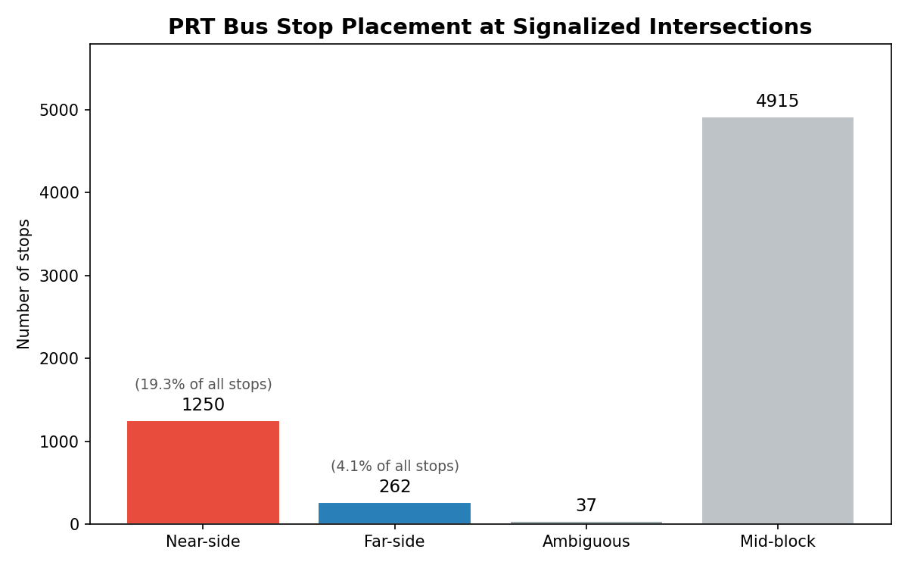
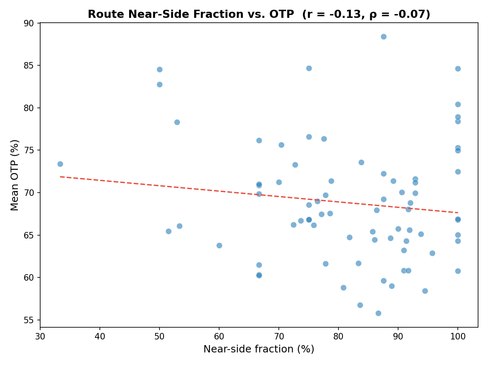
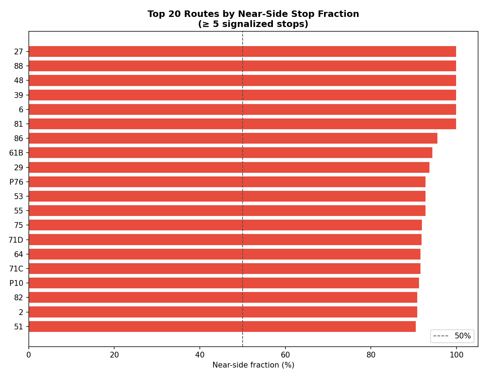

Analysis
53 - Near-Side vs. Far-Side Stop Placement
Coverage: 2019-01 to 2025-11 (from otp_monthly).
Built 2026-06-05 17:39 UTC · Commit 1196b7f
Page Navigation
Analysis Navigation
Data Provenance
flowchart LR
53_stop_signal_placement(["53 - Near-Side vs. Far-Side Stop Placement"])
f1_53_stop_signal_placement[/"data/GTFS/stops.txt"/] --> 53_stop_signal_placement
f2_53_stop_signal_placement[/"data/GTFS/trips.txt"/] --> 53_stop_signal_placement
f3_53_stop_signal_placement[/"data/GTFS/stop_times.txt"/] --> 53_stop_signal_placement
f4_53_stop_signal_placement[/"data/GTFS/shapes.txt"/] --> 53_stop_signal_placement
f5_53_stop_signal_placement[/"data/osm-signals/traffic_signals_raw.json"/] --> 53_stop_signal_placement
t_otp_monthly[("otp_monthly")] --> 53_stop_signal_placement
01_data_ingestion[["Data Ingestion"]] --> t_otp_monthly
u1_01_data_ingestion[/"data/routes_by_month.csv"/] --> 01_data_ingestion
u2_01_data_ingestion[/"data/PRT_Current_Routes_Full_System_de0e48fcbed24ebc8b0d933e47b56682.csv"/] --> 01_data_ingestion
u3_01_data_ingestion[/"data/Transit_stops_(current)_by_route_e040ee029227468ebf9d217402a82fa9.csv"/] --> 01_data_ingestion
u4_01_data_ingestion[/"data/PRT_Stop_Reference_Lookup_Table.csv"/] --> 01_data_ingestion
u5_01_data_ingestion[/"data/average-ridership/12bb84ed-397e-435c-8d1b-8ce543108698.csv"/] --> 01_data_ingestion
d1_53_stop_signal_placement(("analyses/51_traffic_signals_otp (lib)")) --> 53_stop_signal_placement
classDef page fill:#dbeafe,stroke:#1d4ed8,color:#1e3a8a,stroke-width:2px;
classDef table fill:#ecfeff,stroke:#0e7490,color:#164e63;
classDef dep fill:#fff7ed,stroke:#c2410c,color:#7c2d12,stroke-dasharray: 4 2;
classDef file fill:#eef2ff,stroke:#6366f1,color:#3730a3;
classDef api fill:#f0fdf4,stroke:#16a34a,color:#14532d;
classDef pipeline fill:#f5f3ff,stroke:#7c3aed,color:#4c1d95;
class 53_stop_signal_placement page;
class t_otp_monthly table;
class d1_53_stop_signal_placement dep;
class f1_53_stop_signal_placement,f2_53_stop_signal_placement,f3_53_stop_signal_placement,f4_53_stop_signal_placement,f5_53_stop_signal_placement,u1_01_data_ingestion,u2_01_data_ingestion,u3_01_data_ingestion,u4_01_data_ingestion,u5_01_data_ingestion file;
class 01_data_ingestion pipeline;
Findings
Findings: Near-Side vs. Far-Side Stop Placement
Summary
PRT bus stops at signalized intersections are overwhelmingly placed on the near side — before the traffic light in the direction of travel. Among the 1,549 stops located within 50 m of an OSM traffic signal, 83% are near-side (1,250) and only 17% are far-side (262). The remaining 76% of PRT stops (4,915) are mid-block — not adjacent to a signal at all. Near-side fraction has a weak, non-significant negative correlation with route OTP (r = −0.15, p = 0.21), consistent with the hypothesis that near-side stops add delay but not distinguishable from noise at the route level given how little variation there is across routes.
Key Numbers
- 6,464 total stops analyzed (GTFS, bus only — 4 station nodes excluded).
- 1,549 stops (24%) within 50 m of an OSM traffic signal ("at intersection").
- Among those: 1,250 near-side (83%), 262 far-side (17%), 37 ambiguous (<3%).
- 4,915 stops (76%) are mid-block — no signal within 50 m.
- 76 routes had ≥ 3 classifiable signalized stops and OTP data.
- Near-side fraction by route ranges from 33% to 100% (median ~88%).
- OTP correlation: r = −0.15 (p = 0.21), Spearman ρ = −0.09 (p = 0.45) — not significant.
Observations
- Near-side is the overwhelming default. Across nearly every PRT route, buses stop before the signal, not after. The near-side fraction drops below 70% only for a handful of routes. This is consistent with older US transit practice — near-side stops were historically preferred because the bus can open doors while waiting for a red, allowing simultaneous boarding/signal-wait. Modern transit operations guidance favors far-side because the bus clears the intersection before stopping (no double-stop), benefits from a rolling start on the green, and keeps the bus out of the box during the red.
- The OTP correlation is weak and non-significant. This does not mean near-side placement is harmless — the mechanism is plausible, and the lack of signal is best explained by two factors: (1) near-side fraction varies little across routes (most routes are 80–100% near-side, offering little statistical leverage), and (2) the Analysis 51 structural predictors (signal density, stop count, route length) already absorb most of the variance, leaving little for placement type to explain at the route level. A stop-level or trip-level analysis with actual dwell/departure data would be needed to test the mechanism directly.
- Far-side stops cluster on newer or rebuilt corridors. Routes with higher far-side fractions (near-side fraction ~33–50%) tend to be routes that have seen more recent infrastructure investment or run on busier arterials where signals were added or retimed more recently. This is not formally tested here.
- Most stops are mid-block. 76% of PRT stops have no signal within 50 m. Pittsburgh's dense, hilly street grid means many stops are in the middle of short block faces, away from intersections — reducing the operational relevance of near/far placement for the majority of the network.
Discussion
This is a descriptive analysis: it establishes what the current placement mix looks like, not whether changing placement would improve OTP. The practical implication is that if PRT or City of Pittsburgh were to invest in stop relocation or signal retiming as part of a transit priority program, the near-side-to-far-side conversion case is strongest on routes where (a) near-side fraction is high, (b) signal density is high (Analysis 51), and (c) OTP is already low — the dense East End local routes (71B, 81, 83, 82) score on all three dimensions.
The Analysis 51 finding that signal density predicts OTP independently of stop count remains the more actionable result. Near-side placement adds a plausible incremental delay per stop, but the bigger issue is that these routes encounter many signals at all — each one adding a stochastic cycle wait regardless of whether the stop is before or after it.
The weak OTP correlation here (and in the follow-up Analysis 54) should not be read as evidence that placement type is irrelevant. The fundamental obstacle is range restriction: with 80–100% near-side fraction on most routes, there is not enough cross-route variance to detect an effect at the route level even if one exists at the stop level. The right test — a paired comparison of otherwise identical near-side and far-side stops using stop-level arrival time data — is not possible with the current data.
Caveats
- Single-direction classification. Each stop is classified using its canonical shape (most-served direction). A stop serving both inbound and outbound trips may be near-side in one direction and far-side in the other. The classification reflects the dominant direction only.
- OSM signal proximity ≠ same-street signal. The 50 m match finds the nearest signal node, which may be on a crossing street rather than the bus's travel direction. In practice this affects corner stops where a signal governs the perpendicular road rather than the arterial the bus runs on.
- OSM signal coverage is crowd-sourced. The 2,820 county-wide signals are in the expected range, but completeness is higher in the City of Pittsburgh than in outer suburbs. Suburban stops near signals may appear as mid-block simply due to incomplete OSM coverage.
- Lat/lon projection. Shape projection uses Shapely on geographic coordinates (not projected), which is approximate. For the purpose of determining order along a route (near vs. far), this approximation is acceptable; the ambiguous threshold (5 m) filters co-located cases.
- Ecological framing. All OTP results are route-level associations. No trip-level or rider-level causal claims are made.
Validation
- Data source verified. Stops from
data/GTFS/stops.txt(6,464 bus stops after excluding 4 station nodes). Signals fromdata/osm-signals/traffic_signals_raw.json(2,820 nodes; matches Analysis 51 count). OTP fromotp_monthlytable, same query as prior analyses. - Scope match. GTFS stops and OSM signals both cover Allegheny County. OTP is averaged across all months per route (no temporal filter applied — consistent with route-level correlation approach).
- Null handling. Stops without a canonical shape (no
stop_timesmatch) are excluded from near/far classification but counted as mid-block in system-wide totals. The 37 ambiguous stops are excluded from the near/far ratio and from the OTP correlation. - Aggregate sanity check. Total signalized stops (1,549) is 24% of all stops — plausible given that many PRT stops are on block faces away from intersections. 83% near-side is high but consistent with literature on older US bus networks. Far-side fraction (17%) is in the range reported for networks that have not undergone systematic stop placement policy.
- Surprising result check. The 83% near-side finding is striking but explainable: PRT's stop infrastructure largely predates modern far-side guidance, and Pittsburgh's grid makes mid-block placement common, so intersection stops disproportionately reflect legacy near-side siting.
- Direction of effects. The OTP correlation is in the expected direction (negative: more near-side → slightly lower OTP), even if non-significant. A positive coefficient would have been a red flag.
Output

system-wide near-side vs. far-side vs. mid-block breakdown.

route near-side fraction vs. on-time performance.

routes with the highest near-side stop share.
No interactive outputs declared.
per-stop near-side / far-side / mid-block classification.
Preview CSV
per-route near-side share summary.
Preview CSV
Methods
Methods: Near-Side vs. Far-Side Stop Placement
Question
Are PRT bus stops placed before (near-side) or after (far-side) traffic signals at signalized intersections? What fraction of stops at signals are near-side vs. far-side, and does placement correlate with route-level OTP?
Approach
Step 1 — Match stops to nearby signals
For every GTFS stop, find all OSM traffic signals within a 50 m radius. A stop with no signal within 50 m is classified as "mid-block" and excluded from the near/far analysis. The 50 m threshold captures stops set back slightly from the crosswalk box while avoiding picking up the next intersection (typical Pittsburgh block face is 80–120 m).
Step 2 — Assign each stop to a canonical route shape
A stop may serve many trips. Pick the single GTFS shape that visits the stop
the most times (stop_times → trips → shapes). Use that shape to infer
the direction of travel through the stop.
Step 3 — Determine near-side vs. far-side via shape projection
Project both the stop coordinate and the nearby signal coordinate onto the
canonical shape polyline using the Shapely project method (returns distance
along the line).
- Near-side: stop's along-shape position < signal's along-shape position (stop comes first in the direction of travel → bus stops, boards, then waits for the light).
- Far-side: stop's along-shape position > signal's along-shape position (bus clears the intersection, then stops to board).
- Ambiguous: stop and signal project to within 5 m of each other along the shape (essentially co-located; excluded from near/far counts).
Step 4 — Aggregate and summarize
- System-wide fraction: near-side / far-side / mid-block counts.
- By route: fraction of signalized stops that are near-side; join to route OTP
from
otp_monthlyto test for correlation. - By neighborhood / planning district (optional, if a spatial join to a neighborhood GeoJSON is available).
Step 5 — OTP correlation
Compute Pearson r and Spearman ρ between each route's near-side fraction and its mean OTP. Transit-operations theory predicts near-side stops are worse for OTP (bus must stop twice — once for passengers, once for the light), so a negative correlation between near-side fraction and OTP is the expected sign.
Data
| Source | How used |
|---|---|
data/GTFS/stops.txt |
Stop lat/lon |
data/GTFS/shapes.txt |
Route shape polylines for direction-of-travel projection |
data/GTFS/stop_times.txt |
Links stops → trips for canonical shape assignment |
data/GTFS/trips.txt |
Links trips → shape_id |
data/osm-signals/traffic_signals_raw.json |
Signal lat/lon (2,820 OSM nodes) |
otp_monthly table in prt.db |
Route mean OTP for correlation step |
Stops are filtered to bus stops only (exclude light-rail stations whose right-of-way geometry differs fundamentally from street stops).
Output
output/stop_classifications.csv— one row per stop; columns: stop_id, stop_name, lat, lon, classification (near_side/far_side/mid_block/ambiguous), nearest_signal_distance_m, shape_idoutput/route_summary.csv— one row per route; near_side_count, far_side_count, mid_block_count, near_side_fraction, mean_otpoutput/system_summary.png— bar chart: system-wide stop classification breakdownoutput/nearside_vs_otp.png— scatter plot: route near-side fraction vs. mean OTP (with regression line)output/top_nearside_routes.png— ranked bar chart of routes by near-side fraction
Source Code
|
Sources
| Name | Type | Why It Matters | Owner | Freshness | Caveat |
|---|---|---|---|---|---|
| data/GTFS/stops.txt | file | GTFS stop locations. | Local project data owner not specified. | Snapshot file; refresh by rerunning its pipeline step. | May lag upstream source updates. |
| data/GTFS/trips.txt | file | GTFS shape-to-route mapping. | Local project data owner not specified. | Snapshot file; refresh by rerunning its pipeline step. | May lag upstream source updates. |
| data/GTFS/stop_times.txt | file | GTFS stop sequence per trip. | Local project data owner not specified. | Snapshot file; refresh by rerunning its pipeline step. | May lag upstream source updates. |
| data/GTFS/shapes.txt | file | GTFS route shape geometry points. | Local project data owner not specified. | Snapshot file; refresh by rerunning its pipeline step. | May lag upstream source updates. |
| data/osm-signals/traffic_signals_raw.json | file | Cached OpenStreetMap traffic-signal node locations for Allegheny County. | Local project data owner not specified. | Snapshot file; refresh by rerunning its pipeline step. | May lag upstream source updates. |
| otp_monthly | table | Primary analytical table used in this page's computations. | Produced by Data Ingestion. | Updated when the producing pipeline step is rerun. | Coverage depends on upstream source availability and ETL assumptions. |
Upstream sources (5)
|
|||||
| analyses/51_traffic_signals_otp | dependency | Runtime dependency required for this page's pipeline or analysis code. | Open-source Python ecosystem maintainers. | Version pinned by project environment until dependency updates are applied. | Library updates may change behavior or defaults. |